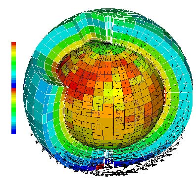

 <---Découpage de l’atmosphère en mailles
Le modèle climatique cherche à être le plus proche possible de la réalité. Pour cela, il représente toutes les variables climatiques possibles. Le modèle part de conditions initiales connues des paramètres climatiques tels que la température, le rayonnement, l'humidité... et les fait évoluer en suivant le formalisme mathématique. Les modèles climatiques peuvent prédire le climat sur des centaines à des milliers d'années.
Le modèle climatique global est une combinaison des données des modèles de chaque sous-système. Il existe par exemple un modèle pour l'atmosphère, un autre qui combine atmosphère et océan pour prendre en compte leurs interactions. L'ensemble des interactions entre l'atmosphère, l'océan, la cryosphère, la lithosphère et la biosphère se nomme le système climatique. Plus on associe de modèles, meilleures sont les précisions.
Actuellement, il existe une vingtaine de centres climatiques dans le monde disposant d'une quarantaine de modèles.
Les modèles climatiques peuvent être utilisés à différentes échelles. Par exemple, si les projections climatiques sont à l’échelle du globe, alors les mailles seront plus grandes (environ 200 km). Cependant, si on s’intéresse seulement aux prévisions d’un pays, alors les mailles seront plus petites et les prévisions plus fines.